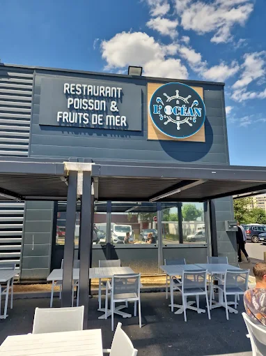

L'Héritage d'une Mer Sans Frontières
Né de la rencontre entre la passion pour les côtes méditerranéennes et la richesse du terroir marocain, L'Océan est plus qu'un restaurant : c'est un voyage sensoriel.
Nous croyons en une cuisine de vérité. Nos poissons sont sélectionnés chaque matin à la criée, garantissant une fraîcheur absolue. La fusion s'opère dans le respect des traditions : le croquant des fritures marocaines rencontre la finesse des herbes de Provence et le velouté des huiles d'olive d'exception.

« Une escale de goût suspendue entre ciel et mer. »
Venez nous voir
Que ce soit pour un déjeuner d'affaires ou un dîner romantique, nous sommes impatients de vous accueillir dans notre havre marin.
Notre adresse
5 Av. des Entrepreneurs,
95400 Villiers-le-Bel, France
Réservations
01 39 92 86 40
Disponibles 10:00 – 22:00
Horaires d'ouverture
- Lundi12:00–15:00, 19:00–23:00
- Mardi12:00–15:00, 19:00–23:00
- Mercredi12:00–15:00, 19:00–23:00
- Jeudi12:00–15:00, 19:00–23:00
- Vendredi12:00–15:00, 19:00–00:00
- Samedi12:00–00:00
- Dimanche12:00–22:30